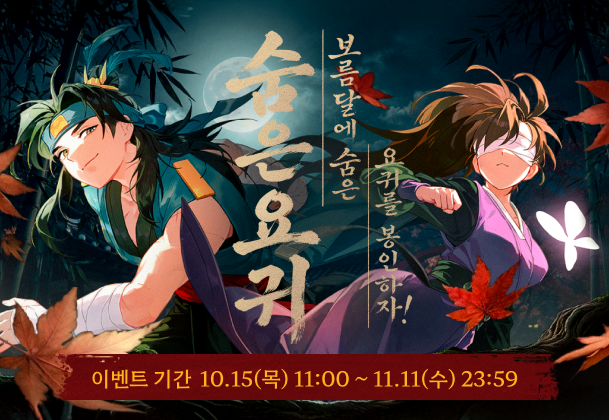
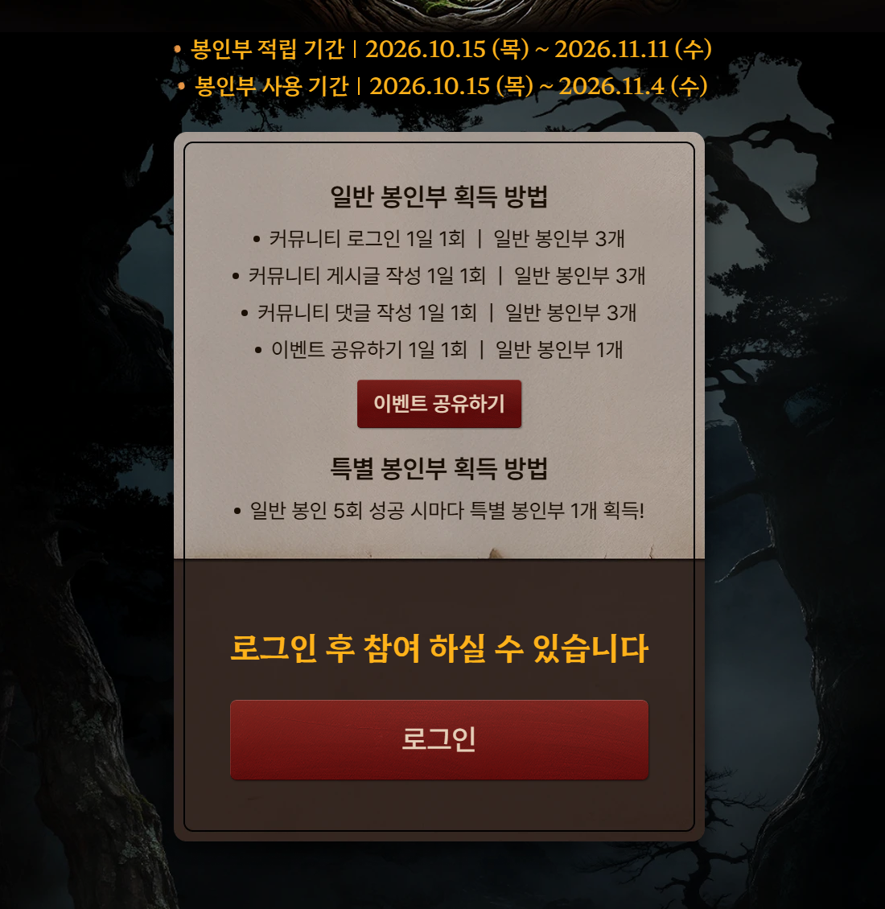
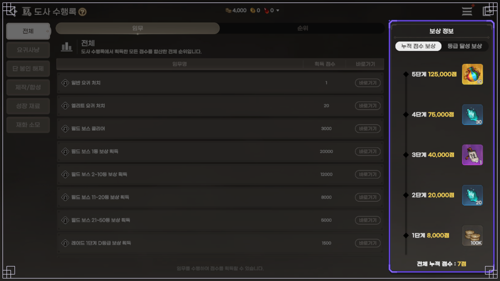
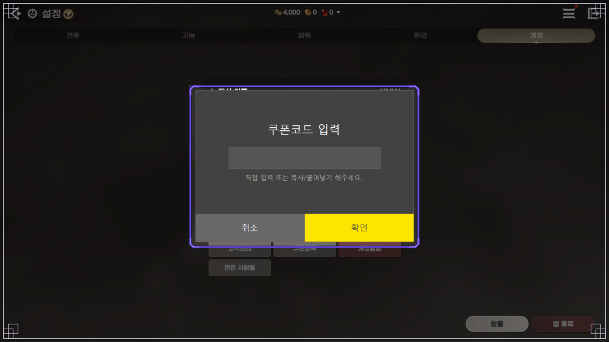

도깨비의세계 엽전 이벤트 정리, 출석·성장 지원·패스·단 봉인 해제·요귀 봉인 5종 최대 합계 5,150,000개와 마감일 한눈에
2026년 10월 16일 기준 도깨비의세계 이벤트 5종을 전부 달성했을 때 받을 수 있는 엽전 최대치는 5,150,000개예요. 보름달 요귀 봉인 2,900,000, 특별 출석 600,000, 초보 도사 성장 지원 750,000, 도깨비의세계 패스 200,000, 단 봉인 해제 700,000을 더한 값이고, 퀴즈·교환형·수행록·쿠폰은 합계에서 뺐어요. 출시 때부터 매일 챙겼다는 가정의 이론상 최대치라서, 지금부터 시작하면 패스 같은 몫은 다 못 채울 수 있어요.
엽전은 장비·가호·도술 성장과 잡화 상점에 쓰는 재화라 아무리 모아도 모자란 편인데요, 이벤트가 포럼 글과 웹 페이지에 흩어져 있어서 엽전 몫만 마감일 순으로 묶어 봤어요. 참고로 거래소·금전 상점·환전소는 금전 쪽이라 엽전과는 쓰는 곳이 달라요.
도깨비의세계 재화 엽전 아이콘이에요
이미지 출처: 도깨비의세계 공식 커뮤니티 공지
보름달 요귀 봉인 이벤트는 엽전을 얼마나 주나요?
보름달에 숨은 요귀를 봉인하라 이벤트는 일반 봉인 20마리에 마리당 100,000, 특별 봉인 3마리에 마리당 300,000을 합쳐 엽전 최대 2,900,000개를 주는, 5종 가운데 가장 큰 보상입니다. 10월 15일 11:00에 시작해 11월 11일까지 열리는 공식 커뮤니티 이벤트예요.

보름달에 숨은 요귀를 봉인하라 이벤트 배너
이미지 출처: 도깨비의세계 공식 커뮤니티 이벤트
기한은 11월 4일 전에 끝낸다고 잡는 게 안전해요. 포럼 글은 봉인부 적립을 11월 4일, 사용을 11월 11일로 적고 웹 이벤트 페이지는 거꾸로 적어 두어서 공식 두 곳의 표기가 엇갈리거든요.

웹 이벤트 페이지의 기간과 봉인부 획득 방법 부분이에요
이미지 출처: 도깨비의세계 보름달 요귀 봉인 이벤트 페이지
일반 봉인부는 아래 네 가지 미션으로 모으고, 전부 1일 1회에 매일 00:00 초기화, 하루 최대 10개까지예요.
- 공식 커뮤니티 로그인 3개
- 게시글 작성 3개
- 댓글 작성 3개
- 웹 이벤트 공유 1개
요귀 한 마리를 봉인하려면 일반 봉인부가 5개 필요해서 20마리는 봉인부 100개, 하루 10개씩 모아도 최소 10일이 걸려요. 일반 봉인 5회마다 특별 봉인부가 1개씩 생기고 기간 중 최대 4개인데, 그중 왕구렁이는 엽전이 아니라 추첨 보상이라 합계에서 뺐습니다.
10월 21일 아침 8시에 끝나는 엽전 이벤트는 무엇인가요?
10월 21일(수) 08:00에 끝나는 엽전 이벤트는 초보 도사 성장 지원, 도깨비의세계 패스, 훈민증표 수집, 한글날 OX 퀴즈 네 가지입니다. 5종 합계에 들어가는 건 성장 지원과 패스 둘이네요.
| 이벤트 | 엽전 몫 | 조건 | 마감 |
|---|---|---|---|
| 초보 도사 성장 지원 | 미션 30개 × 25,000 = 750,000 | [길잡이] 문파 임무 완료, 캐릭터 단위 | 10월 21일 08:00 |
| 도깨비의세계 패스 | 홀수 레벨 기본 보상 10회 × 20,000 = 200,000 | 패스 레벨 20, 레벨당 100포인트 | 10월 21일 08:00 |
| 훈민증표 수집 | 훈민증표 10개 → 엽전 1,000 | 레벨 50 달성 | 10월 21일 08:00 |
| 한글날 OX 퀴즈 | 정답 1~5문제에 3,000 / 5,000 / 10,000 / 30,000 / 50,000 | 레벨 50, 매일 19:30, 계정 1일 1회 | 10월 21일 08:00 |
패스는 미션 7종이 각 30점이라 하루 최대 210포인트까지 쌓이고, OX 퀴즈는 10월 20일까지 매일 19:30에 열려요. 합계에 든 두 이벤트가 이 마감 안에 몰려 있어서 저는 여기부터 챙겨 달리려고요.
11월 이후까지 이어지는 엽전 이벤트도 있나요?
특별 출석은 11월 4일 08:00까지, 단 봉인 해제는 2027년 10월 6일 08:00까지 이어지는데요, 마감이 급하지 않은 편이에요.
- 특별 출석: 28일 일차표에서 1·3·5·8·10·12·15·17·19·22·24·26일차에 엽전 50,000씩 12번, 합쳐서 600,000이에요. 계정당 1회이고 기간이 끝나면 못 받은 보상은 사라져서 매일 들어가 두는 게 편해요.
- 단 봉인 해제: 누적 10·30·50·80·120·180·250개 단계마다 100,000씩 7번, 합쳐서 700,000이고 [길잡이] 묘선생의 특급 비법을 마친 캐릭터가 대상이에요.
합계에는 안 넣었지만 11월 이후에도 엽전이 나오는 곳이 두 군데 더 있어요. 하나는 서사 임무 ‘[첫걸음] 신비한 동화 속으로 5’를 마치면 열리는 전래동화로, 별의 조각 1개를 엽전 100개로 바꿀 수 있고 12월 10일 08:00까지예요. 아이콘 위치와 조각 얻는 법은 전래동화 별의 조각 상점 교환 글에 풀어 뒀어요.

메뉴 전투 및 모험 줄에서 전래동화 아이콘이 강조돼 있어요
이미지 출처: 도깨비의세계 공식 커뮤니티 이벤트
다른 하나는 도사 수행록이에요. 주간 누적 8,000점을 채우는 1단계 보상이 엽전 100,000개입니다. 이 화면은 공식 가이드의 테스트 환경 그림이라 출시판 수치와 다를 수 있어요.

누적 점수 보상 1단계에 엽전 100K가 표시돼요
이미지 출처: 도깨비의세계 공식 커뮤니티 가이드
쿠폰으로 받는 엽전은 얼마나 되나요?
쿠폰으로는 칭호나와라뚝딱 100,000, 매출1위감사합니다 1,111,111, 도깨비의다짐 1,000,000처럼 큰 덩어리가 나가지만 합계에는 넣지 않았습니다. 애플1위·구글1위 쿠폰을 한 계정이 둘 다 쓸 수 있는지는 공식 안내에 없어서 각각만 적었어요.
| 쿠폰 | 엽전 | 기한 |
|---|---|---|
| 칭호나와라뚝딱 | 100,000 (+칭호 [타바로 소식통]) | 11월 11일 23:59 |
| 매출1위감사합니다 | 1,111,111 (계정당 1회) | 11월 11일 23:59 |
| 애플1위풍악을울려라 · 구글1위잔치로구나 | 각 111,111 | 11월 11일 23:59 |
| 도깨비의다짐 | 1,000,000 | 제한 없음 |
| PC방 프로모션 상자(피카플레이 회원, 누적 5시간) | 50,000 + 한정 탈것 백선운 | 이벤트 11월 1일 23:59, 쿠폰 등록 11월 30일 23:59 |
코드 입력은 설정의 계정 탭에서 하고(iOS는 쿠폰 등록 사이트에 회원 번호와 함께 입력해요), 쿠폰별 입력법은 초기 4종 쿠폰 글, 도깨비의다짐은 라이브 감사 쿠폰 3종 글, PC방 상자 채우는 법은 백선운 글에 정리해 뒀어요.

설정의 계정 탭에서 열리는 쿠폰코드 입력 팝업이에요
이미지 출처: 도깨비의세계 공식 커뮤니티 가이드
구글 플레이 코드퀘스트는 10월 28일 23:59까지 응모하고 경품 중에 인게임 쿠폰(엽전 300,000, 가호 주머니 10)이 있는 추첨형이라 이것도 합계 밖이에요. 도깨비1008·도깨비의약속·도깨비의마음·도깨비의내일 쿠폰에는 엽전이 없습니다.
이미 끝난 엽전 보상도 있나요?
10월 9일부터 15일까지 점검·사과 보상으로 엽전이 여러 번 풀렸지만, 마지막 사과 보상이 10월 16일 00:00에 끝나 더는 받을 수 없습니다. 대신 환전소 쪽은 바뀐 게 있어요.
엽전 환전소 NPC 수로에서 금전 1개당 엽전이 100에서 300으로 올랐고, 10월 14일 정기 점검 이전 교환분은 소급해서 지급돼요. 소급 엽전은 11월 11일 05:00까지 받으시면 됩니다.
자주 묻는 질문
Q. 보름달 봉인부 게시글·댓글 미션은 아무 캐릭터로나 되나요?
대표 캐릭터를 설정해 두어야 게시글·댓글 미션을 할 수 있어요. 로그인과 이벤트 공유 미션에는 이 조건이 붙어 있지 않습니다.
Q. 왕구렁이를 봉인하면 엽전이 나오나요?
엽전이 아니라 Google Play 기프트 코드 1만원권을 200명에게 주는 추첨이고, 당첨 발표는 11월 19일이에요.
도깨비의세계 엽전 이벤트 정리
순서는 10월 21일에 닫히는 성장 지원과 패스를 먼저, 보름달 봉인은 매일 미션을 놓치지 않는 쪽으로 잡고 11월 4일 전에 끝내는 걸 추천드려요. 특별 출석과 단 봉인 해제는 그다음에 천천히 가셔도 됩니다.
✔ 도깨비의세계 같이 보기 좋은 내용
· 도깨비의세계 쿠폰 4종 정리, 코드 입력하는 법과 마감일 한눈에 (초기 4종 코드와 입력법)
· 도깨비의세계 라이브 방송 감사 쿠폰 3종, 도깨비의다짐·약속·마음 보상과 사용 기한 정리 (도깨비의다짐 엽전 1,000,000)
· 도깨비의세계 전래동화 꼭 해야 하는 이유, 별의 조각 얻는 법과 미누 상점 교환 (별의 조각 모으는 법)
· 도깨비의세계 백선운 탈 것 얻는 법, PC방 안 가고 집 PC 크래프트박스로 누적 5시간 채우는 5단계 (PC방 엽전 50,000)
참고한 곳 (2026.10.16 기준)
· 도깨비의세계 공식 커뮤니티 이벤트 한눈에 보기
· 보름달에 숨은 요귀를 봉인하라 공지 · 보름달 요귀 봉인 이벤트 페이지
· 쿠폰 종합 안내
· 엽전 쓰임 안내(공식 팁) · 환전소 교환비 변경 업데이트 안내